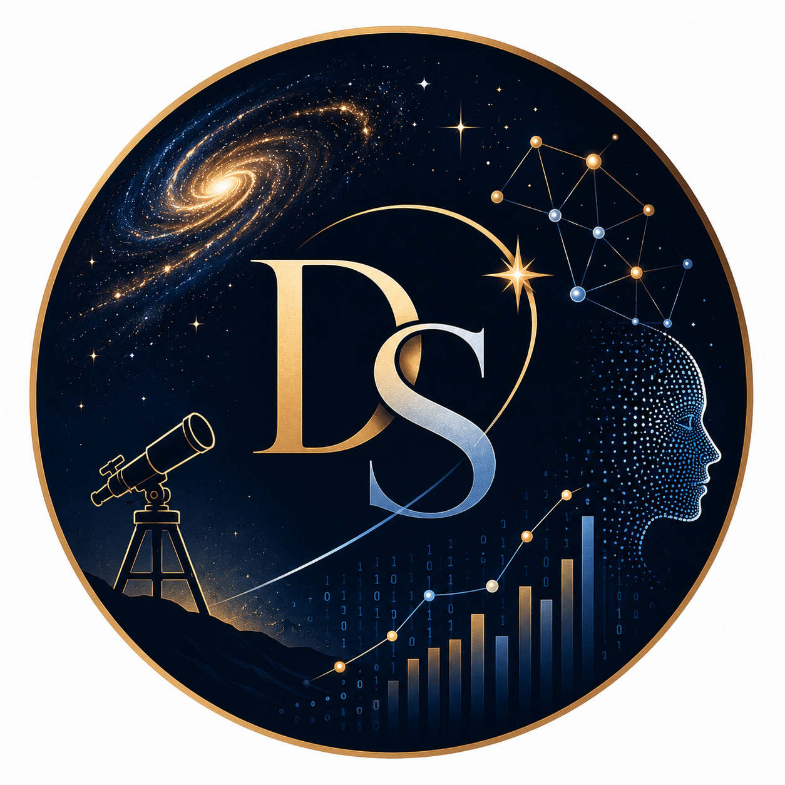

Building intelligent systems using Machine Learning, Deep Learning, AI-driven analytics, spectral data processing, and scientific computing.
Results-driven Data Scientist with 5+ years of experience in Machine Learning, AI, Predictive Analytics, and Statistical Modeling across scientific and industrial domains. Currently working at Picarro Technologies on AI-driven gas spectral analysis and compound fingerprinting using Python, PyTorch, Deep Learning, and AWS infrastructure.
Working on AI-driven analysis of gas spectral data for compound speciation, fingerprinting, and analytical ML workflows.
Built ML models, customer churn prediction systems, Power BI dashboards, and large-scale business analytics solutions.
Developed real-time Gamma-Ray Burst localization pipelines using AstroSat data with probabilistic modeling and scientific computing.
Python • SQL • R • Pandas • NumPy
PyTorch • TensorFlow • Scikit-Learn • Deep Learning
Power BI • Tableau • Matplotlib • Seaborn
AWS • Docker • Git • GitHub • Jupyter
Developed ML-based compound identification and speciation systems for gas spectral datasets.
Built predictive ML models and business intelligence dashboards for customer analytics.
Developed automated astrophysics pipelines for Gamma-Ray Burst localization using AstroSat data.
I transitioned from studying Gamma-Ray Bursts in deep space to building AI systems for real-world data problems.
Email: divitadsaraogi@gmail.com
LinkedIn: linkedin.com/in/divita-saraogi
GitHub: github.com/DivitaDSaraogi
Location: Bengaluru, India